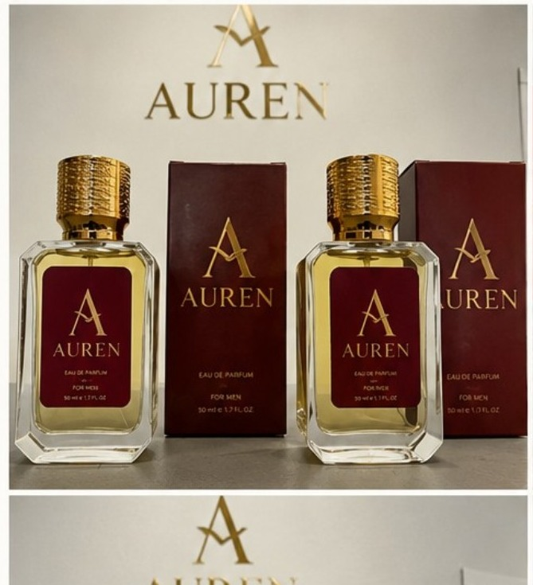
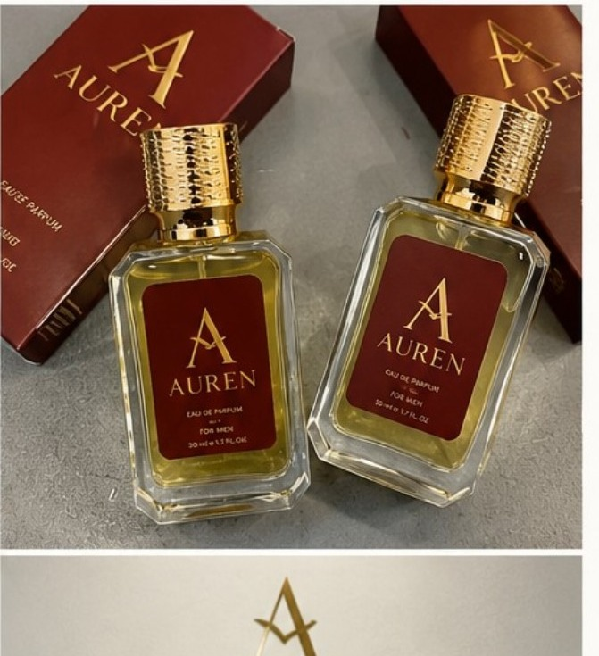
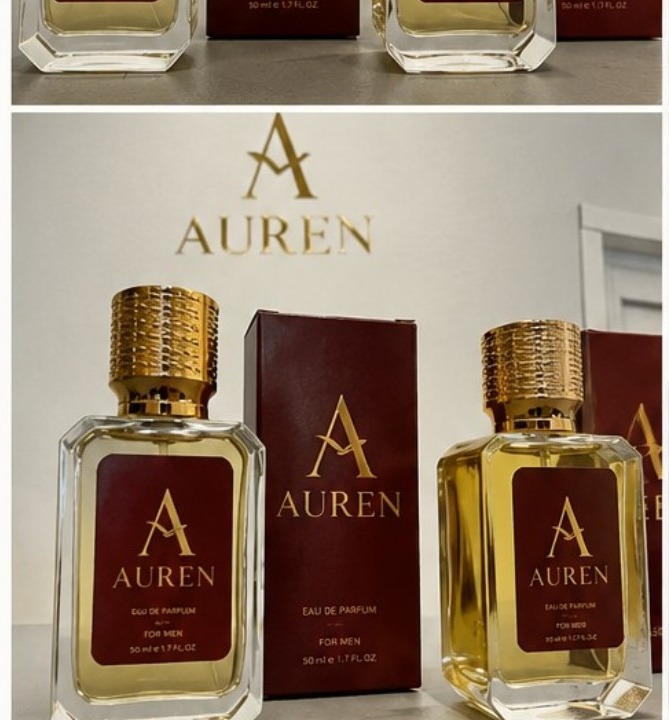
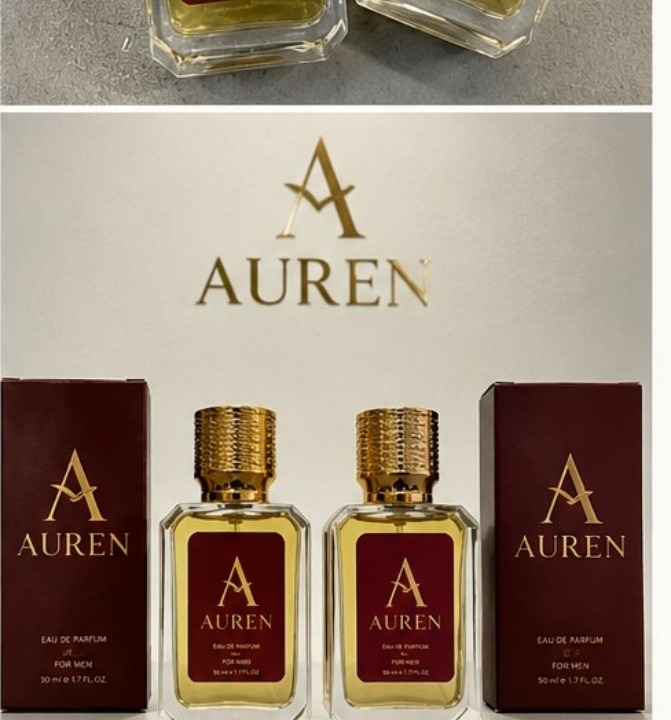

Auren Black
ERKEK · ODUNSU · BAHARATLI
Meyvemsi tazelik, sıcak baharatlar ve zarif odunsu tabanla modern bir imza.

Auren'in seçkin kokularını keşfet. Bir ürüne dokunarak koku karakterini, nota piramidini ve ürün videosunu keşfet.
Meyvemsi tazelik, sıcak baharatlar ve zarif odunsu tabanla modern bir imza.

Narenciye ve nane ferahlığı, sıcak baharat kalbi ve amberli deri tabanı.

Neroli etkisini sıcak amber ve odunsu-yosunsu nüanslarla buluşturan sofistike karakter.

Madagaskar vanilyası, pudramsı dokular, Palo Santo ve beyaz misklerle sarıcı bir his.